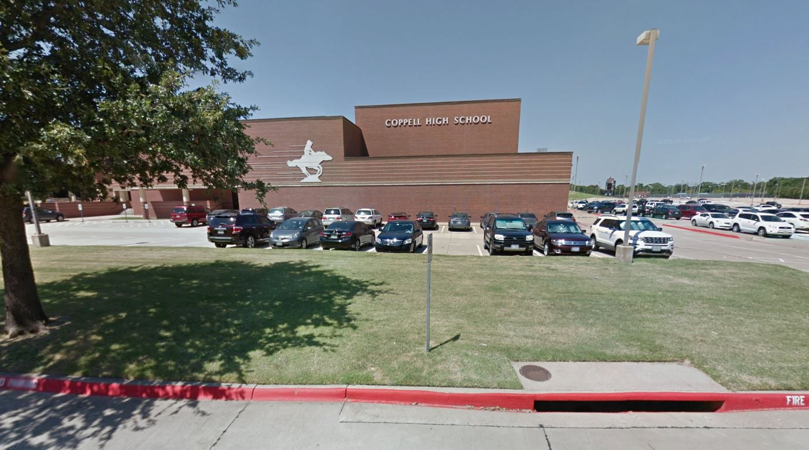
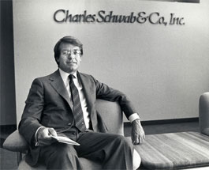

PROFESSIONAL IMAGE
Technical Career
Resume Link
From an early age it was obvious that my future should include engineering and critical thinking. Math was my passion, which is proven as at the age of 2 when I would count Monopoly money incessantly. The process of math and the theory of science intrigued my youthful brain and led to my passion for software development.

Entering high school, I enrolled myself into the engineering class and loved the problem-solving nature that accompanied the class. This passion intensified as the years accumulated and I devoted my software development skills on the Disruptive Innovation team. The team was comprised of a mix of seniors and juniors at my high school and the goal of our team was to create a device, called gateways, to track the mental growth and decay of special education students, such as cerebral palsy, through eye and motion tracking. We later got a provisional patent from the USPTO for this device.
With this experience I chose to attend Texas A&M University under the school of engineering. College made me realize the need to acquire higher level learning outside of the classroom. This helped me focus my attention on acquiring an internship. After countless interviews and coding challenges, I landed a position as an intern at Electric Reliability Council of Texas (ERCOT). During my short time at ERCOT, I developed a single web-based application that dynamically creates intuitive displays for Real Time System Operators. The application improved accuracy and efficiency by replacing hundreds of separate display files that have to be maintained and updated individually.
After completing the internship at ERCOT IN Taylor, TX, I decided another internship would help me achieve my future goals in the field of computer science. As the 2019 Fall semester went on, I interviewed with JP Morgan Chase, AT&T, Toyota, Charles Schwab and others. Following the interviews, I received offers letters from a handful of great companies and decided to take my talents to Charles Schwab as a Technology Intern in the Summer of 2020.

Schwab Intern Link